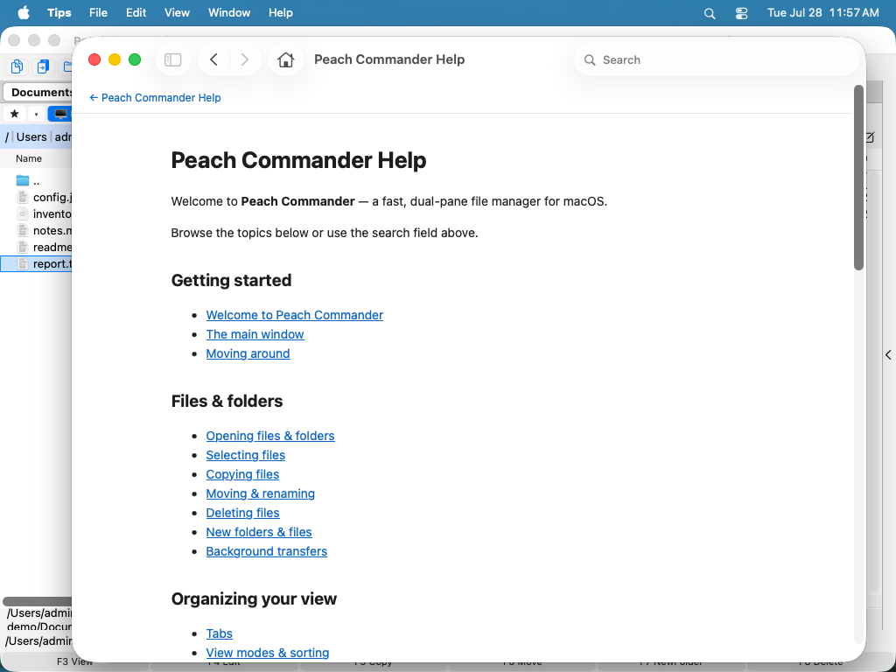

Witamy w Peach Commander
Peach Commander to szybki, sterowany z klawiatury menedżer plików dla systemu macOS w klasycznej, dwupanelowej tradycji. Zamiast pojedynczego okna pokazuje dwa foldery obok siebie, dzięki czemu kopiowanie, przenoszenie i porównywanie plików sprowadza się do wskazania jednym panelem źródła, a drugim miejsca docelowego. Został stworzony dla osób, które chcą trzymać dłonie na klawiaturze i szybko poruszać się po plikach. Traktuj go jak narzędzie o dużej mocy, które działa obok Findera, a nie zastępuje go: używaj Findera do swobodnego przeglądania i Quick Look, a po Peach Commander sięgaj, gdy masz do wykonania prawdziwą pracę z dużą liczbą plików.
 (Rysunek: Układ dwupanelowy — jeden folder po lewej, drugi po prawej, z wyróżnionym aktywnym panelem.)
(Rysunek: Układ dwupanelowy — jeden folder po lewej, drugi po prawej, z wyróżnionym aktywnym panelem.)
Pierwsze kroki
- Otwórz Peach Commander. Okno otwiera się z dwoma panelami, z których każdy pokazuje folder.
- Kliknij panel lub naciśnij Tab, aby uczynić go panelem aktywnym. Tylko aktywny panel wyświetla kursor.
- Klawiszami strzałek przesuwaj kursor, a klawiszem Enter otwieraj folder pod kursorem.
- Skieruj drugi panel na miejsce, do którego mają trafić pliki. W większości operacji na plikach panel aktywny jest źródłem, a drugi panel miejscem docelowym.
- Zaznacz jeden lub więcej plików, a następnie użyj klawiszy funkcyjnych na dole (F5 aby kopiować, F6 aby przenosić), aby wykonać na nich operację.
Oba panele są niezależne: każdy ma własny folder, widok i porządek sortowania, więc możesz ustawić dokładnie te dwie lokalizacje, między którymi chcesz pracować.
Skróty
| Akcja | Klawisze |
|---|---|
| Przełącz aktywny panel | Tab |
| Zamień oba panele miejscami | Ctrl+U |
| Kopiuj zaznaczone pliki do drugiego panelu | F5 |
| Przenieś zaznaczone pliki do drugiego panelu | F6 |
Wskazówki
- Domyślnie oba panele znajdują się obok siebie. Możesz też ułożyć je pionowo (jeden nad drugim) z menu Widok.
- Rozmiar każdego panelu można zmienić, przeciągając dzielnik między nimi; oba panele zachowują wygodną minimalną szerokość.
- Nie znasz jeszcze dwupanelowego menedżera plików? Zacznij od kolejnych tematów: Główne okno objaśnia każdą część okna, a Poruszanie się omawia szybkie przechodzenie między folderami.
- Tę pomoc możesz otworzyć w dowolnej chwili z menu Pomoc ▸ Pomoc Peach Commander (Cmd+?) i przeszukiwać ją w polu u góry okna pomocy.

(Rysunek: Wbudowana pomoc otwiera się w przeglądarce pomocy macOS, z przeszukiwalnym spisem treści.)